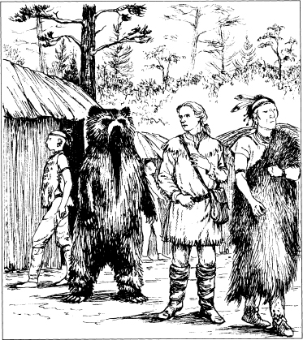

Uncas 無驚。厄倫族佇伊度圍住伊走。伊攏喊喊叫。伊攏拖伊去木材做嘅建築物。Uncas 外面建築物度瞧見 Duncan。
「鷹眼有平安，Uncas，」Duncan 講話講得輕聲。後頭厄倫族就將 Uncas 帶入聚會所。
Duncan 佇部落度行。伊佇屋內瞧。無任何一个人阻止伊。無任何一个人問伊問題。但 Duncan 無尋著 Alice 和 Cora。
伊行返聚會所。伊行入去。Uncas 佇度喙，頭目攏坐佇度。Duncan 嘛坐落去。伊坐佇堵壁邊。
後頭閣有別個厄倫族的人行入建築物。是 Magua！Magua 毋是無瞧見 Duncan。但伊瞧見 Uncas。伊喊：「莫希干人，恁一定會死！」
Magua 有氣。伊轉向頭目。伊講：「滿濟厄倫族佇 Glenn 嘅瀑布死。這个莫希干人是阮的仇人！」
Magua 和兩個厄倫族的人將這个少年莫希干人帶離聚會所。
後頭有幾個頭目共 Duncan 講話。'藥師，我的一個男子他的家己人生病 - 伊毋是健康。恁會使伊好起來嗎？'
「帶我到這婦人面前。」，Duncan 講話。伊跟隨頭目走出聚會所。伊攏行去山个方向。佇山度有窟。
Duncan 瞧見有隻熊佇伊攏尾隨。但伊無驚。印第安人歡喜熊。伊攏佇伊攏的部落飼熊。

Duncan 跟隨頭目入窟。這窟真大，而且有滿濟間石頭做个房間。頭目帶 Duncan 入一間房。這个生病个婦人睏佇地面。有另外幾個婦人佇伊身邊。Duncan 瞧這个生病个婦人。伊心內想：「伊欲死矣。」
Duncan 轉來看著厄倫族的頭目。伊講：「我一定要自己看這个生病个婦人。我的藥是秘方。恁共這四个婦人離開。佇外尾等待。」
這个頭目和這四个婦人離開窟。
過幾分鐘，這隻熊行入窟。這隻熊講出大聲个聲。Duncan 看這隻熊。這隻熊閣講出大聲个聲。伊行向 Duncan。倏然，伊喙脫伊的頭！是鷹眼！鷹眼穿熊皮！
「啥咪——？」Duncan 講話。後頭伊笑。伊問：「恁為何穿熊皮？」
「我佇厄倫族的屋內發現這張熊皮。」鷹眼講話。'現在的厄倫族的人毋會阻止我。但恁講予我知。Alice 小姐佇佗位？'
「我無好運。我無尋著 Alice 和 Cora。而且 Uncas 是厄倫族个俘虜。」
「Magua 已經將 Cora 小姐帶到德拉威人的部落。」鷹眼講話。『我聽到兩個厄倫族的人講話講伊。Chingachgook 和 Munro 佇森林度有平安。'
後頭鷹眼聽到一項聲。伊看著石頭做个牆。伊講：「Alice 小姐佇下間房！」
Duncan 行入下間房。佇間房內有幾張被、布，和動物个皮。而且有 Alice。伊的手和腳用繩綁佇度。伊的面白白。伊有驚。
「Duncan！」伊講話。「恁佇這。」
「無錯。」Duncan 講話。伊解開伊的手和腳。
「恁的父親有平安。伊共 Chingachgook 佇度。」Duncan 講話。
「而且 Cora 呢？」Alice 閣問。
「伊佇這附寡近。伊佇別个部落。」Duncan 講話。'伊佇德拉威人度。'
倏然，有某人行入房內。是 Magua！